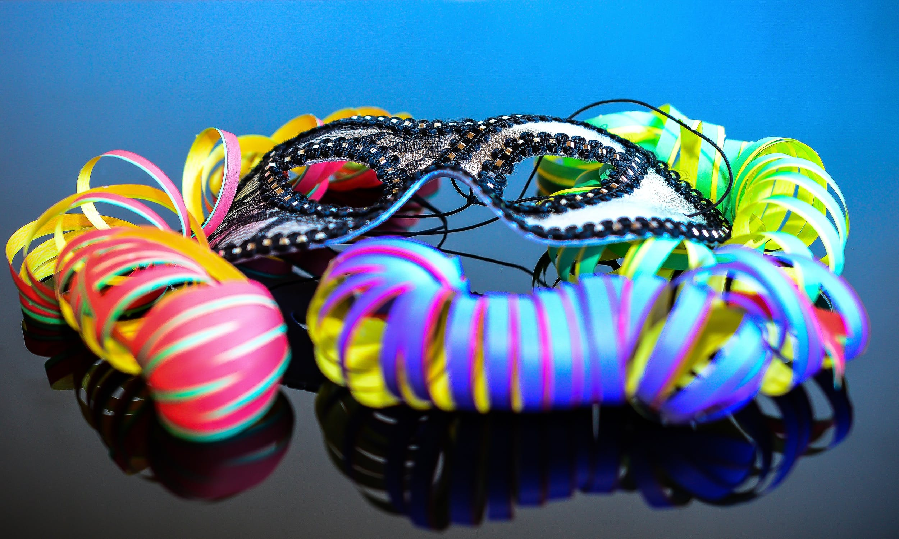

The origins of Mardi Gras can be traced to medieval Europe,
passing through Rome and Venice in the 17th and 18th centuries to
the French House of the Bourbons. From here, the traditional
revelry of "Boeuf Gras," or fatted calf, followed France to her
colonies. On March 2, 1699, French-Canadian explorer Jean Baptiste
Le Moyne Sieur de Bienville arrived at a plot of ground 60 miles
directly south of New Orleans, and named it "Pointe du Mardi Gras"
when his men realized it was the eve of the festive holiday.
Bienville also established "Fort Louis de la Louisiane" (which is
now Mobile) in 1702. In 1703, the tiny settlement of Fort Louis de
la Mobile celebrated America's very first Mardi Gras. In 1704,
Mobile established a secret society (Masque de la Mobile), similar
to those that form our current Mardi Gras krewes. It lasted until
1709. In 1710, the "Boeuf Gras Society" was formed and paraded
from 1711 through 1861. The procession was held with a huge bull's
head pushed along on wheels by 16 men. Later, Rex would parade
with an actual bull, draped in white and signaling the coming
Lenten meat fast. This occurred on Fat Tuesday.
